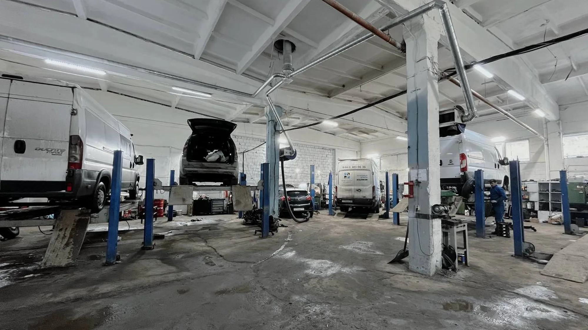
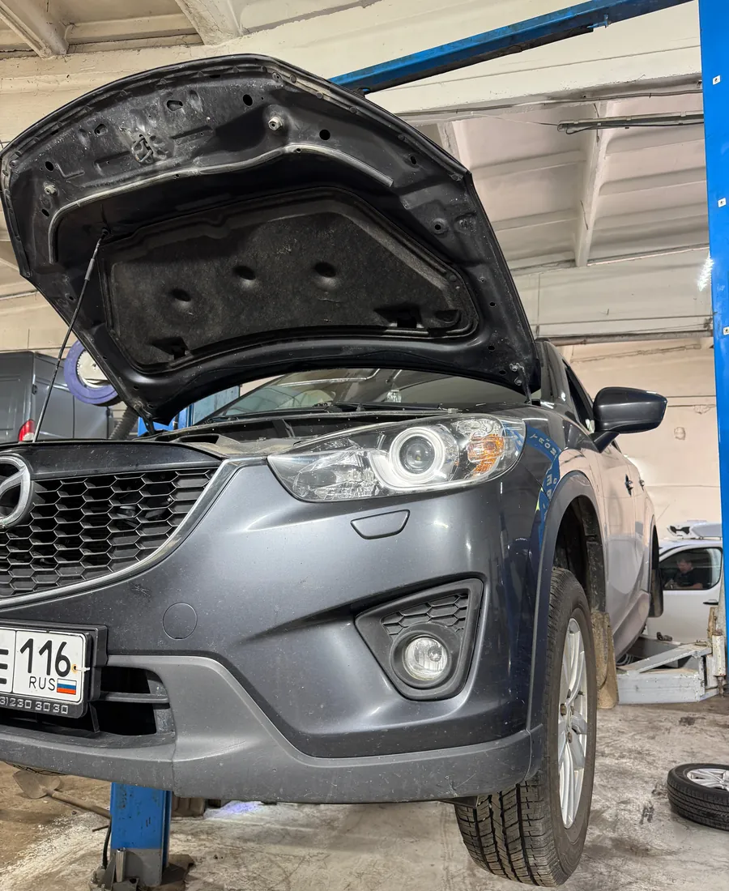
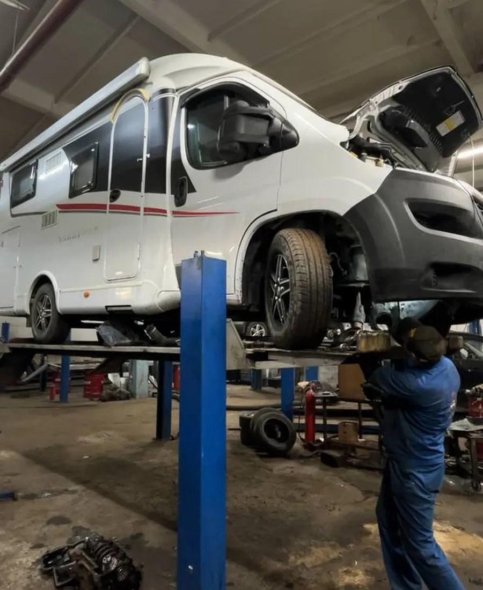
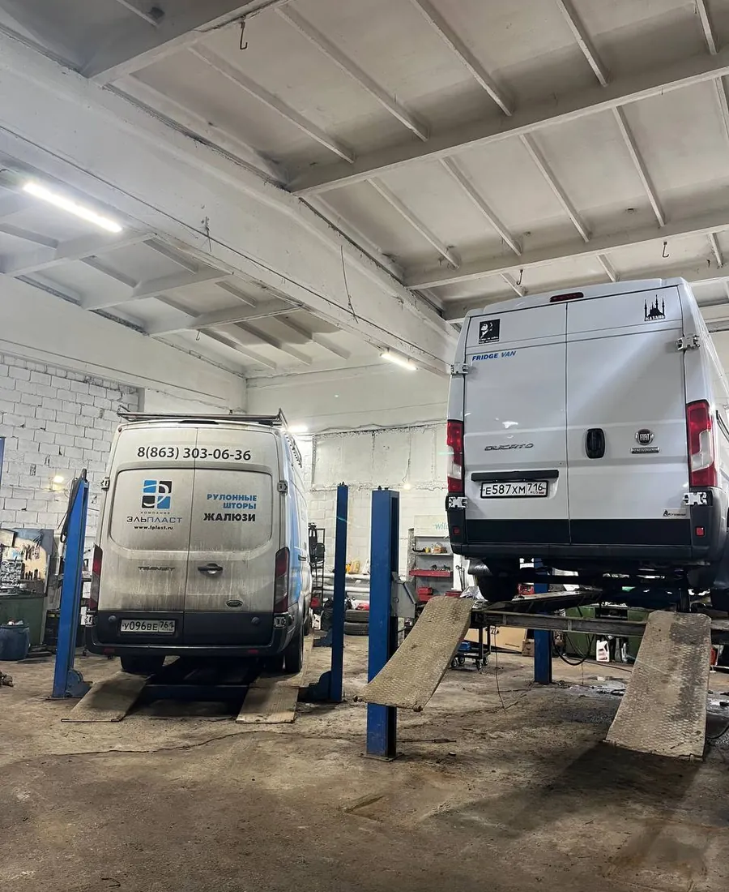
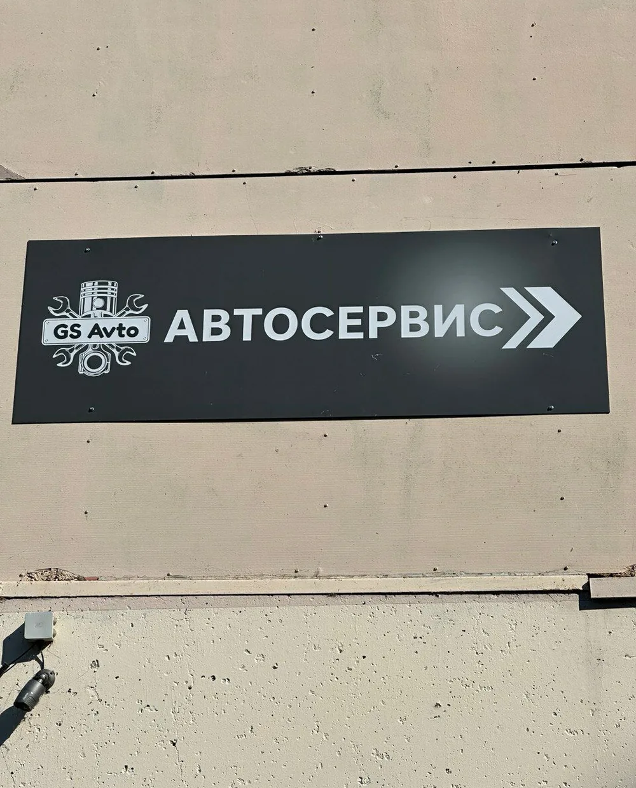

Замена масла
1 шт. · легковые авто
900 ₽
Воскресенская, 20 · Казань
Легковые, микроавтобусы и грузовой транспорт. Диагностика, двигатель, КПП, электрика и ходовая — в одном цехе.
Кому помогаем
В карточке сервиса отдельно указаны автобусы и микроавтобусы, грузовой сервис и обслуживание бронеавтомобилей.
Карточка на Яндексе
Отечественные, европейские, китайские, японские и корейские марки. ТО, двигатель, ходовая, электрика.

Пассажирский транспорт: диагностика, ремонт двигателя и КПП, ходовая, электрика.

Фургоны и грузовая техника: двигатель, КПП, мосты, карданные валы, пневмосистема.
Цены
Четыре позиции, опубликованные в витрине сервиса. В карточке отмечено «Давно не обновлялось» — актуальную стоимость мастер называет до начала работ.
Прайс в карточке1 шт. · легковые авто
900 ₽1 шт.
800 ₽1 шт.
700 ₽1 шт.
1 200 ₽Это весь прайс, который опубликован в карточке на 14 ноября. Остальные работы из списка выполняются по запросу — стоимость уточняйте у мастера.
Виды работ
Полный список работ — из блока «Особенности» карточки GS-Avto на Яндекс Картах. Ничего не добавлено.
Ремонт двигателя и ГБЦ, раскоксовка, эндоскопия, замена ГРМ.
АКПП, КПП, РКПП, сцепление, карданные валы, ремонт моста.
Автоэлектрика и автоэлектроника, стартеры, генераторы, Вебасто.
Амортизаторы, шаровые опоры, рулевые рейки, тормозная система.
Марки и категории из карточки
В сервисе
Особенности из карточки: можно приехать по предварительной записи, оставить машину на парковке и подождать в клиентской зоне.
Отзывы
Оценка складывается из 87 оценок на Яндекс Картах. Ниже — реальные тексты клиентов сервиса.
Все 47 отзывовФото
Фотографии из альбома организации на Яндекс Картах — цех, подъёмники, техника в работе.
22 фото в альбомеКонтакты
Доступность помещения на инвалидной коляске — частично. Предварительная запись по телефону или в WhatsApp.
